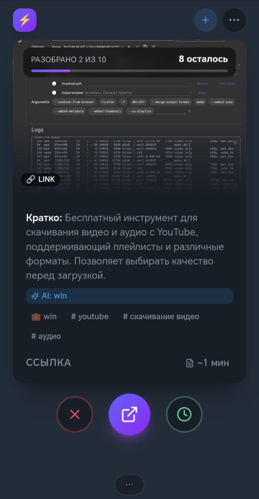
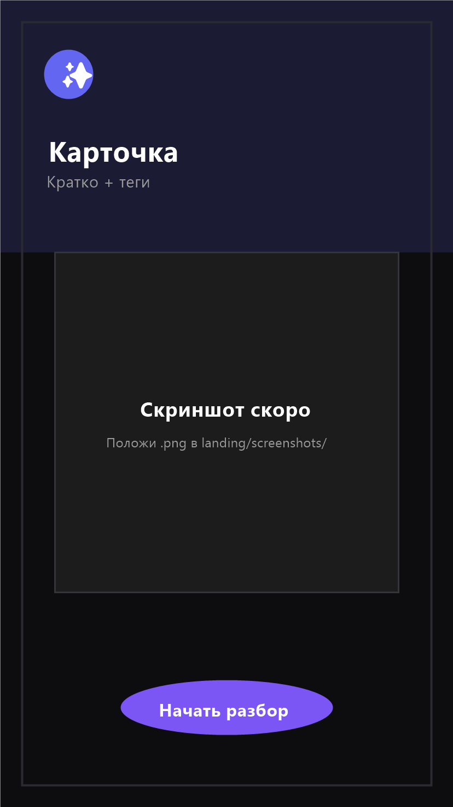
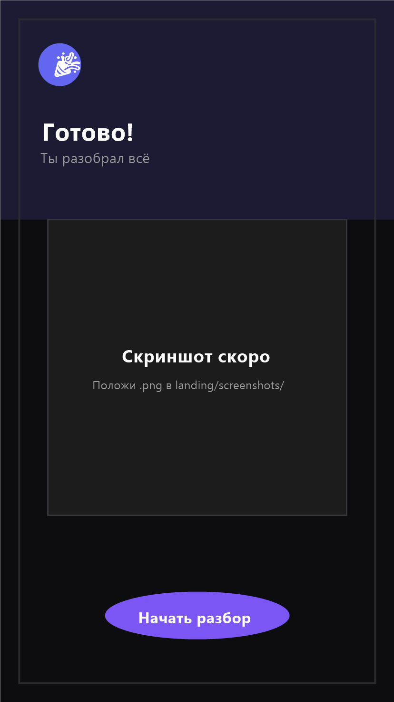
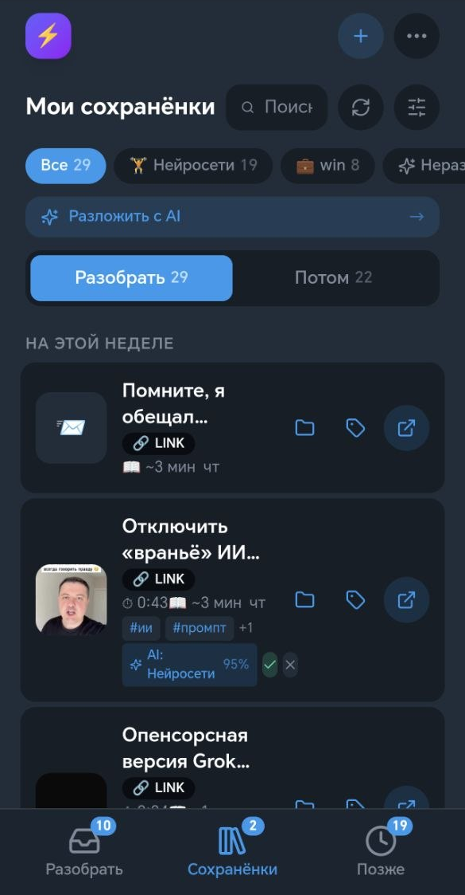
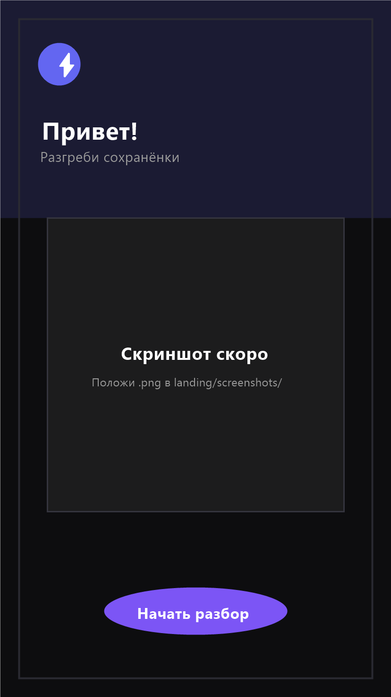
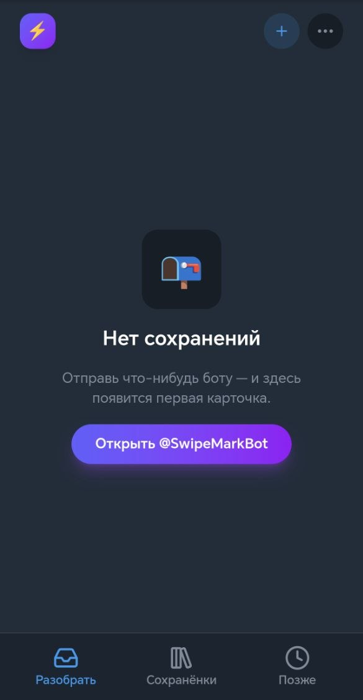

Разгреби свои сохранёнки
Отправляй ссылки в Telegram, а SwipeMark поможет быстро разобрать их с помощью свайпов и AI.
Ты сохраняешь всё. Потом ничего не находишь.
«Посмотреть потом», «сохранить на всякий случай», «это надо прочитать».
Через год — 800 сохранённых сообщений, и ты уже ничего не помнишь.
Разгребать вручную по папкам — монотонная работа, на которую не хватает сил.
Свайпай — как в карточной колоде
Колода карточек. Одно решение — один свайп.
Сохраняй
Ссылка, фото или видео боту — карточка готова сама: заголовок, превью, источник.
Разбирай
Влево — в архив, вправо — потом, вверх — открыть. Прогресс-бар над колодой держит в тонусе.
Решай
AI подскажет папку и теги, перескажет «Кратко» — и ты освобождаешь голову.
Вот как это выглядит






AI помогает решить, что делать с ссылкой
Не «у нас есть AI», а AI, который перескажет, предложит папку и теги — чтобы решение принималось за один свайп.
Готов начать разгребать?
Открой бота в Telegram — первая карточка появится через минуту.
Открыть @SwipeMarkBot